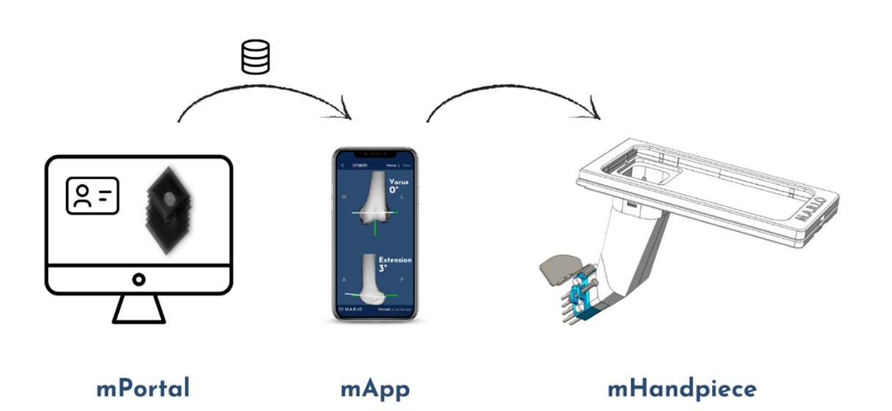
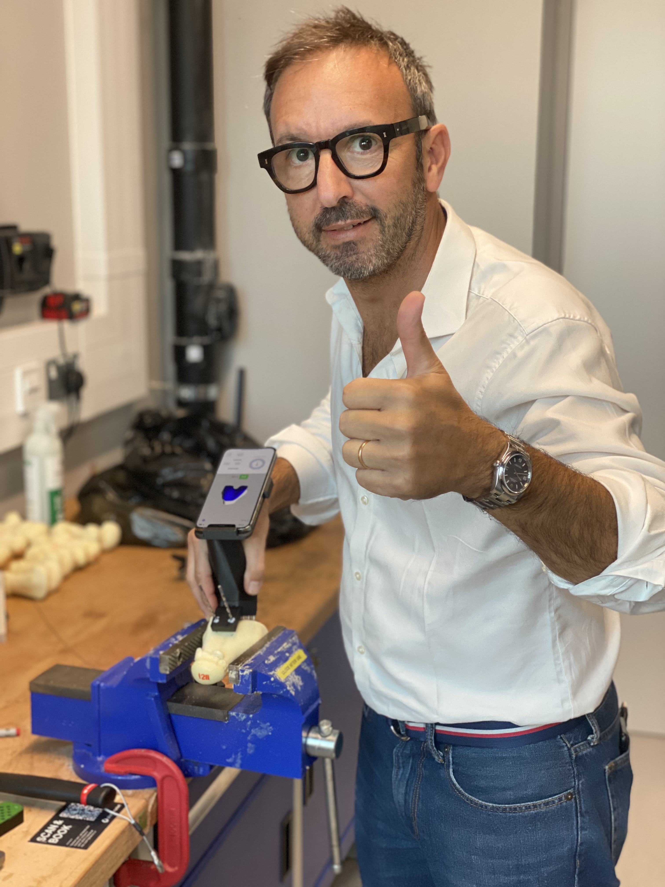

M.A.R.I.O is a cutting-edge platform technology designed for seamless surgical navigation. Once the patient's
medical
image is uploaded to our portal, we take care of everything—including image processing and navigation model
training.
The user simply needs to load the prepared model onto their smartphone just before surgery. During the
procedure, they
can effortlessly follow on-screen guidance to determine the optimal pin placement for securing the standard
cutting jig.
With no waiting time, a hassle-free workflow, and complete flexibility, M.A.R.I.O streamlines the surgical
process like
never before.

Key Features of M.A.R.I.O
The M.A.R.I.O system offers a cutting-edge, cost-effective solution with numerous advantages that enhance
both
surgical efficiency and accessibility:
- Intra-operative Flexibility: M.A.R.I.O provides unparalleled flexibility during surgery,
adapting to various procedural requirements.
- Affordability and Accessibility: Offering a cost-effective alternative to expensive
robotic
systems and patient-specific instrumentation, M.A.R.I.O. increases accessibility to high-quality care
globally.
- Universal Compatibility: By utilising standard smartphones, M.A.R.I.O ensures seamless
integration with existing healthcare infrastructures, making it accessible to a wide range of medical
facilities.
- Real-time Ligament Balancing: Incorporating real-time ligament balancing, M.A.R.I.O
addresses
a critical gap in low-cost navigation technologies, optimizing alignment during procedures.
- Improved Surgical Outcomes: M.A.R.I.O. enhances alignment accuracy and ligament
balancing,
contributing to better surgical outcomes, reducing complications, and potentially lowering the need for
costly
revision surgeries.
We have implemented a robust testing protocol and conducted
usability assessments involving surgeons using device design #1.
Participants provided valuable feedback through questionnaires, as
outlined in our testing methodology. Both average location and
angular errors exceeded clinically acceptable thresholds, set at 3
mm for location and 3° for angular error. This real-world usage and
feedback collection process unveiled key insights.
During these usability assessments, it became evident that the pilot
holes designed for the installation of referential pins in design #1
were too loose, causing difficulties for the participants during the
surgery. In response to this feedback, we made substantial
improvements in our design approach, leading to the development of
design #2.
The results obtained with design #2 demonstrated remarkable
improvements in performance compared to design #1. Errors in
location and angular measurements consistently fell below the
clinically acceptable thresholds, with significantly reduced
variations between data points. Notably, location errors
consistently remained below the 3 mm threshold, aligning with
clinically accepted standards. While the sagittal plane exhibited
slightly larger errors compared to the transverse plane, the overall
average error remained within acceptable clinical limits.
Our rigorous laboratory validation process conclusively affirms
the efficacy of the M.A.R.I.O device. Its capacity to achieve
implant alignment with remarkable accuracy has the potential to
revolutionise total knee arthroplasty procedures, offering the
prospect of reduced complications and improved patient well-being.
This technology stands as a game-changer in the field, enhancing
surgical outcomes and marking a significant advancement in
orthopaedic care.
